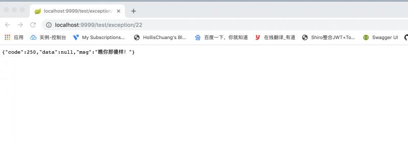

你是不是在为业务逻辑中出现的异常弄的焦头烂额，常常在后台报错，前端却无法提示错误内容，导致用户体验极差？比如下单失败，前端只能提示下单失败，但是却不知道为什么失败，是库存不足，还是余额不足，亦或是商品已经失效？
之前想在 service 层直接返回封装好的 Reponse(code, data,msg) 对象，这样的话我就直接在service层提示出错原因了（msg：错误提示），但是这样代码就不够美观，因为Response原本是设计为后端统一返回的对象，太臃肿，最后决定用自定义异常来完成。
import lombok.AllArgsConstructor;
import lombok.Getter;
/**
* @author: zp
* @Date: 2019-10-10 14:47
* @Description:
*/
@Getter
@AllArgsConstructor
public enum ErrorType {
/**
* 错误类型
*/
OBJECT_NOT_FOUND(0,"对象不存在"),
INVALID_PARAMS(1,"参数不正确"),
result_not_exist(2,"记录不存在")
;
/**
* 错误码
*/
private int code;
/**
* 提示信息
*/
private String msg;
}提供了两个构造方法，一个用来提示常见的错误（枚举类中的），另一个提示不常用的（一次两次的那种），可拓展。
import com.example.demojpa.enums.ErrorType;
import lombok.Getter;
/**
* @author: zp
* @Date: 2019-10-10 14:42
* @Description:
*/
@Getter
public class ServiceException extends RuntimeException{
private Integer code;
/**
* 使用已有的错误类型
* @param type 枚举类中的错误类型
*/
public ServiceException(ErrorType type){
super(type.getMsg());
this.code = type.getCode();
}
/**
* 自定义错误类型
* @param code 自定义的错误码
* @param msg 自定义的错误提示
*/
public ServiceException(Integer code, String msg){
super(msg);
this.code = code;
}
}响应对象
/**
* @author: zp
* @Date: 2019-10-10 15:22
* @Description:
*/
@Data
public class Response<T> {
/**
* 状态码
*/
private Integer code;
/**
* 请求成功时返回的对象
*/
private T data;
/**
* 提示信息
*/
private String msg;
}工具类
import com.example.demojpa.model.Response;
/**
* @author: zp
* @Date: 2019-10-10 15:48
* @Description:
*/
public class ResponseUtils {
/**
* 调用成功
*/
private static final String SUCCESS = "调用成功！";
public static Response success(Object obj){
Response res = new Response();
res.setCode(200);
res.setData(obj);
res.setMsg(SUCCESS);
return res;
}
public static Response success(){
return success(null);
}
public static Response error(Integer code, String msg){
Response res = new Response();
res.setCode(code);
res.setMsg(msg);
return res;
}
}import com.example.demojpa.exception.ServiceException;
import com.example.demojpa.model.Response;
import com.example.demojpa.utils.ResponseUtils;
import org.springframework.web.bind.annotation.ControllerAdvice;
import org.springframework.web.bind.annotation.ExceptionHandler;
import org.springframework.web.bind.annotation.ResponseBody;
/**
* @author: zp
* @Date: 2019-10-10 15:11
* @Description:
*/
@ControllerAdvice
public class ServiceExceptionHandler {
/**
* @ExceptionHandler相当于controller的@RequestMapping
* 如果抛出的的是ServiceException，则调用该方法
* @param se 业务异常
* @return
*/
@ExceptionHandler(ServiceException.class)
@ResponseBody
public Response handle(ServiceException se){
return ResponseUtils.error(se.getCode(),se.getMessage());
}
}
为了简单一点，我直接在controller中抛异常，看看结果。
@GetMapping("/exception/{msg}")
public String exception(@PathVariable String msg) throws InvalidParamExceptionAbstract, NoSuchObjectExceptionAbstract {
if(StringUtils.isEmpty(msg)){
throw new ServiceException(ErrorType.INVALID_PARAMS);
}else if("null".equals(msg)) {
throw new ServiceException(ErrorType.OBJECT_NOT_FOUND);
}else{
throw new ServiceException(250,"瞧你那傻样！");
}
}
关注我不会让你失望哟～